정보통신산업기사 (2005-09-04 기출문제)
1과목: 디지털전자회로
1. 변조도 40[%]인 진폭변조에서 반송파의 평균전력이 10[kw]이었다면 피변조파의 평균전력은 몇 [kw]인가?
- 10.8
- 8.3
- 4.2
- 2.5
(정답률: 알수없음)

2. 그림과 같은 회로에 입력 Vi가 인가 되었을 때 출력은 어느 것이 가장 적당한가?
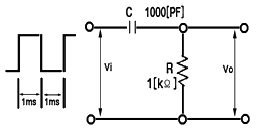
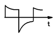
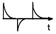
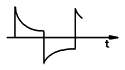
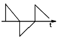
(정답률: 알수없음)
3. 다음 중 그림의 회로에서 궤환비(β)는?
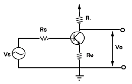
- -RL
- -(Re + RL)
- -(ReRL)
- -Re
(정답률: 알수없음)
4. 다음 반복 펄스 파형에서 펄스의 점유율은 몇 [%]인가? (단, τ = 0.5[㎲], T = 10[㎲])
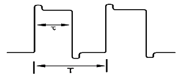
- 5[%]
- 10[%]
- 20[%]
- 25[%]
(정답률: 알수없음)
5. 2진수 1100을 그레이코드로 변환한 것은?
- 1111
- 1000
- 1010
- 0011
(정답률: 알수없음)
6. 다음 표와 같은 Karnaugh map을 최소화하면?
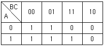
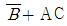
- B + AC
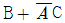
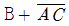
(정답률: 알수없음)
7. 다음 그림의 회로는 어떤 역할을 하는가?
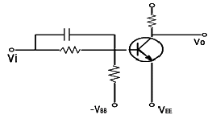
- NOT 회로
- AND 회로
- OR 회로
- exclusive OR 회로
(정답률: 알수없음)
8. R-S Flip-Flop을 J-K Flip-Flop으로 만들고자 할 때 필요한 게이트(Gate)는?
- OR gate 2개
- AND gate 2개
- NOR gate 2개
- NAND gate 2개
(정답률: 알수없음)
9. 반송파 vc = Vc sin ωct를 프 = Vm sin pt 로 진폭변조했을 때 피변조파 v(t)의 식은?
- v(t) = (Vc + Vm)sin pt
- v(t) = (Vc + Vm sin pt)sin ωct
- v(t) = (Vc + Vm)sin ωct
- v(t) = (Vc sin ωct + Vm)sin pt
(정답률: 알수없음)
10. 수정진동자의 지지기(holder)가 갖추어야 할 조건으로 적합하지 않는 것은?
- 진동 에너지(energy)에 손실을 주지 않을것
- 지지기 및 전극과 수정 면사이의 상대위치 변화가 원활할것
- 외부로부터 기계적 진동이나 충격에 의해서 발진에 지장이 생기지 않을것
- 기압, 온도, 습도의 영향을 받지 않는 구조일 것
(정답률: 알수없음)
11. 그림의 증폭 회로에서 S를 단락 시켰을 경우에도 그 값의 변화가 거의 없는 것은?
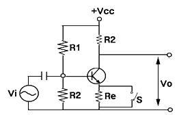
- 증폭기의 입력저항
- 증폭기의 안정도
- 증폭기의 전류 이득
- 증폭기의 전압이득
(정답률: 알수없음)
12. 수정편의 등가회로에서 L= 25[mH], C = 1.6[pF], R = 5[Ω]일 때 수정편의 Q 는 얼마인가?
- 25000
- 12500
- 10000
- 5000
(정답률: 알수없음)
13. T플립플롭을 토글(toggle) 플립플롭이라고 하는 주된 이유는?
- 상태변화를 위해서는 토글스위치가 필요하므로
- 2개의 입력펄스마다 토글되므로
- 출력이 스스로 토글되므로
- 각 입력펄스마다 출력이 토글되므로
(정답률: 알수없음)
14. 4개의 J-K 플립플롭을 이용하여 구성할 수 있는 분주기의 최대값은 얼마인가?
- 8분주기
- 10분주기
- 16분주기
- 24분주기
(정답률: 알수없음)
15. 그림과 같은 논리 회로의 출력은?
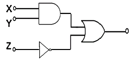
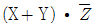
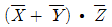
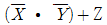
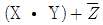
(정답률: 알수없음)
16. 논리식 A ( A + B + C )를 간단히 하면?
- A
- 0
- 1
- A + B + C
(정답률: 알수없음)
17. 그림에서 입력 전압 V1 및 V2와 출력전압 Vo의 관계는?
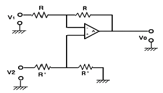
- Vo = V2 - V1
- Vo = V1 - V2
- Vo =
 (V2 - V1)
(V2 - V1) - Vo =
 (V2 + V1)
(V2 + V1)
(정답률: 알수없음)
18. RLC 직렬공진 회로에서 공진주파수에 대한 선택도 Q 의 값은? (단, ω 는 각속도)
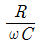
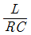
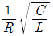
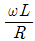
(정답률: 알수없음)
19. 그림과 같은 회로는 무슨 회로인가?
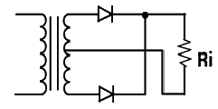
- 반파 정류회로
- 전파 정류회로
- 배 전압 회로
- 필터 회로
(정답률: 알수없음)
20. 다음 중 에미터 폴로워(emitter follower)의 특징이 아닌것은?
- 입출력 임피던스가 대단히 높다
- 부하 저항이 변화해도 전류, 전압 이득은 일정하게 유지된다.
- 전압이득은 1에 가깝다.
- 전류이득이 크다.
(정답률: 알수없음)
2과목: 정보통신기기
21. 디지털 데이터를 디지털 신호로 전송하는 장치는?
- CODEC
- 변복조기
- DSU
- 전화
(정답률: 알수없음)
22. 다음 중 FM 송신기의 부가회로가 아닌 것은?
- 순시편이 제어회로(IDC)
- 프리엠퍼시스 회로
- 전치 보상기(Pre Distorter)
- 평형변조기
(정답률: 알수없음)
23. 데이터통신은 전자 교환국에 수용된 푸쉬버튼전화로 신호가 접속될 수 있다. 수자 “8”을 눌렀을E 때 신호 주파수는?
- 697 [Hz] + 1209 [Hz]
- 770 [Hz] + 1336 [Hz]
- 852 [Hz] + 1336 [Hz]
- 852 [Hz] + 1477 [Hz]
(정답률: 알수없음)
24. MHS(Message Handling System)의 기능 구조가 아닌 것은?
- 메시지 전송기능(MTA)
- 사용자 대응기능(UA)
- 메시지 분석 처리기능(MAH)
- 물리적 메시지 배달기능(PDS)
(정답률: 알수없음)
25. 다음은 팩시밀리에서 사용하는 압출 부호화 방식이다 다음 중 G4팩스에서 사용하는 압축부호화 방식은?
- MMR 부호화
- MMH 부호화
- MR 부호화
- MH 부호화
(정답률: 알수없음)
26. 다음 중 CATV의 구성 요소가 아닌 것은?
- 헤드엔드
- MUSE 전송장치
- 서비스 분배전송로
- 가입자 단말장치
(정답률: 알수없음)
27. 변복조기(MODEM)의 기능을 성명한 것이다. 설명이 옳지 않는 것은?
- 전송매체를 통해서 데이터를 전송하는 데 필요한 기기이다.
- 디지털 신호를 아날로그 회선에서 전송이 적합하도록 변조하여 준다.
- 디지털 신호를 복류신호로 전송하기 위한 정보통신기기이다.
- 아날로그 신호를 디지털 신호로 복조하여 주는 정보통신기기이다.
(정답률: 알수없음)
28. 게이트웨이로 유입되는 인터넷의 프레임을 목적지로 보내는 장치로서 프레임 경로를 제어할 수 있는 기기는?
- 모뎀
- 허브
- 리피터
- 라우터
(정답률: 알수없음)
29. 위성통신이나 무선통신등에서 여러가입자가 동시에 할당된 주파수대에서 통신이 가능하도록 하는 다원접속 방식이 아닌 것은?
- 주파수 분할 접속
- 시 분할 접속
- 멀티 분할 접속
- 코드 분할 접속
(정답률: 알수없음)
30. 5회선 이내의 국선이나 구내 교환기의 내선을 여러대의 내선전화로 사용할 수 있는 다기능 전화기는?
- 카폰 전화기
- 내부통화 전화기
- 푸쉬버튼 전화기
- Hot-line 전화장치
(정답률: 알수없음)
31. 시분할 다중화의 설명으로 옳지 않은 것은?
- 하나의 전송로를 일정한 시간으로 나누어 다중화하는 기법이다.
- 시간으로 다중화하므로 사용 주파수대역이 없다.
- 동기식과 비동기식 시분할 다중화 기법이 있다.
- point-to-point 방식의 구성에 적합하다.
(정답률: 알수없음)
32. 고해상도의 영상을 표시하기 위한 것으로 방전관의 원리를 이용한 표시장치는?
- CRT
- Plasma
- LCD
- LED
(정답률: 알수없음)
33. 우주 공간에 마이크로파대의 중계장치를 탑재한 정지 위성을 띄워서 지상의 지구국에서 발사한 전파를 증폭한 후 다시 지구로 발사하여 통신하는 통신은?
- 이동통신
- 위성통신
- 화상통신
- 음성통신
(정답률: 알수없음)
34. 비디오 텍스의 국제표준 기술방식이 아닌 것은?
- 알파 모자이크 방식
- 알파 지오 메트릭 방식
- 알파 캡틴 방식
- 알파 포토 그래픽 방식
(정답률: 알수없음)
35. 데이터 입력장치 중 키보드에 의하지 않고 도표나 그림 등을 직접 컴퓨터에 입력시키는 것은?
- 디지타이져
- 마우스
- 플로터
- 플래즈마
(정답률: 알수없음)
36. 수화기 진동판의 구비 조건이 아닌 것은?
- 자유진동이 적을 것
- 평탄한 주파수 특성
- 진동이 외력에 반비례할 것
- 고투자율의 재료 사용
(정답률: 알수없음)
37. 그림과 같은 전송시스템에서 ① 에 해당하는 장비명은?
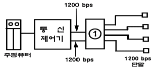
- 시분할 다중화기
- 주파수 분할 다중화기
- 모뎀 공동 이용기
- 집중화기
(정답률: 알수없음)
38. 다음 중 유선계 뉴미디어 서비스가 아닌 것은?
- CATV
- LAN
- teletex
- teletext
(정답률: 알수없음)
39. 지구국 카세그레린 안테나의 이득은?
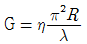
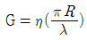
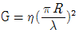
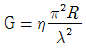
(정답률: 알수없음)
40. 통신제어 처리장치의 구성요소가 아닌 것은?
- 회선 제어부
- 회선 접속부
- 전송 제어부
- 전단 처리기(FEP)
(정답률: 알수없음)
3과목: 정보전송개론
41. 다음은 동축케이블에 대한 설명이다. 틀린 것은?
- 장거리 전화 및 TV전송에 사용된다.
- 아날로그와 디지털 신호전송에 모두 이용될 수 있다
- 0 전위 이상의 전위를 가지며, 동진폭, 역위상의 신호가 전송된다.
- 광대역 전송로로 사용된다.
(정답률: 알수없음)
42. 그림과 같은 전송부호의 이름은?
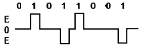
- 단류 NRZ
- 복류 RZ
- AMI
- Dicode
(정답률: 알수없음)
43. 광섬유 케이블의 레일리 산란에 대한 설명 중 잘못된 것은?
- λ2 에 비례한다.
- 파장이 길수록 레일리 산란 손실은 적다.
- 입사되는 빛의 파장보다도 미소한 굴절률의 흔들림에 의해 일어나는 것이다.
- 전송되는 모드 및 코어의 직경과 무관하다.
(정답률: 알수없음)
44. 16진 PSK에서 반송파간의 위상차는?
- 12도
- 22.5도
- 25도
- 42.5도
(정답률: 알수없음)
45. ARQ 방식 중 에러 발생 비율이 높을 경우 블록의 길이를 작게하고, 재전송 요청 비율이 작을 경우는 블록을 크게하는 방식은?
- Stop-and-wait ARQ
- Go-Back-N ARQ
- Adaptive ARQ
- Selective ARQ
(정답률: 알수없음)
46. 북미 표준(T1) PCM 시스템의 전송속도로 적합한 것은?
- 56 Kbps
- 64 Kbps
- 1.54 Mbps
- 2.048 Mbps
(정답률: 알수없음)
47. 디지털 수신 시스템의 순서를 올바르게 나타낸 것은?
- 원천 복호화 → 채널 복호화 → 캐리어 복조
- 원천 복호화 → 캐리어 복조 → 채널복호화
- 캐리어 복조 → 원천복호화 → 채널복호화
- 캐리어 복조 → 채널복호화 → 원천복호화
(정답률: 알수없음)
48. 케이블 선로에서 장하라 함은 무엇을 의미하는가?
- C를 첨가하는 것
- G를 첨가하는 것
- R을 첨가하는 것
- L를 첨가하는 것
(정답률: 알수없음)
49. PCM 전송 방식에서 4[KHz]의 대역폭을 갖는 음성 정보를 7[bit] coding 으로 부호화 한다면 음성을 전송하기 위한 데이터 전송률은?
- 0[Kbps]
- 24[Kbps]
- 56[Kbps]
- 64[Kbps]
(정답률: 알수없음)
50. 멀티드롭(multi-drop] 형 네트워크에서 컴퓨터로 구성된 제어국이 여러 대의 단말기로 구성된 종속국에 차례로 데이터 송신요구가 있는지 묻는 송신권 제어 방식은?
- 셀렉팅(Selecting) 방식
- 회선쟁탈(contention) 방식
- 폴(polling)링 방식
- 라우팅(Routing) 방식
(정답률: 알수없음)
51. 다음 동축 케이블에서 특성 임피던스가 가장 높은 것은? (단, d 는 내부도체의 직경, D 는 외부도체의 직경이다.)
- d = 6[mm], D = 8[mm]
- d = 2[mm], D = 8[mm]
- d = 1[mm], D = 3[mm]
- d = 4[mm], D = 11[mm]
(정답률: 알수없음)
52. 다음 중 CDMA 이동통신에 이용되는 대역 확산 방식이 아닌 것은?
- 주파수 호핑방법
- 잡음 호핑방법
- 직접 시퀀스방법
- 시간 호핑방법
(정답률: 알수없음)
53. 데이터 링크 제어절차(HDLC)에 대한 설명중 잘못된 것은?
- 수 Mbps 단위의 데이터 전송이 가능하다.
- 비동기 방식보다 전송이 효율이 우수하다
- 반이중, 전이중 전송 방식이 모두 가능하다.
- Byte 방식 프로토콜로서 시스템의 변경 및 확대가 어렵다.
(정답률: 알수없음)
54. 아날로그 신호를 디지털 신호로 변환하는 과정을 옳게 나열한 것은?
- 부호화-양자화-표본화
- 양자화-부호화-표본화
- 표본화-양자화-부호화
- 표본화-부호화-양자화
(정답률: 알수없음)
55. 정보를 전송하기위한 5단계중 4단계는?
- 회선접속
- 링크절단
- 데이터전송
- 회선절단
(정답률: 알수없음)
56. 수신 신호전력의 측정값이 20dBm으로 나타났다. 몇 [mW]인가?
- 100[mW]
- 150[mW]
- 200[mW]
- 250[mW]
(정답률: 알수없음)
57. 수신장치에서 송신된 데이터의 에러비트를 검출하고 정정할 수 있는 방식은?
- ARQ
- FEC
- Bit stuffing
- HDBn
(정답률: 알수없음)
58. 전송에서 다중화 방식을 사용하는 이유를 가장 적합하게 설명한 값은?
- 누화를 줄이기 위해
- 손실과 간섭을 줄이기 위해
- 전송장치를 단순화 하기 위해
- 전송매체를 효율적이고 경제적으로 이용하기 위해
(정답률: 알수없음)
59. 데이터 전송방식중 동기식 전송방식에 해당하는 것은?
- 전송되는 각 글자 사이에는 일정치 않은 휴지 기간이 있을 수 있다
- 각 문자의 앞에는 1개의 start 비트가 있다
- 수신측 단말에 버퍼기억장치가 필요하다
- 동기는 글자단위로 이루어진다
(정답률: 알수없음)
60. 문자 방식 프로토콜에서 일반적인 메시지 블록의 형태중 BCC(Block check character)의 체크 범위가 아닌 것은?
- STX
- TEXT
- ETX
- SOH
(정답률: 알수없음)
4과목: 전자계산기일반 및 정보설비기준
61. 프로그램 작성단계애서 순서도를 작성하는 시기는?
- 문제분석과 program의 구조설계가 끝난 후
- Source의 입력이 끝난후
- program 작성이 끝난후
- error debugging중
(정답률: 알수없음)
62. 정보를 기억장치에 기억 또는 읽어내는 명령을 한 후부터 실제의 정보가 기억 도는 읽기 시작 할 때까지의 소요시간은?
- Access time
- Idle time
- Run time
- Seek time
(정답률: 알수없음)
63. 주기억 장치의 속도가 중앙처리장치의 속도보다 현저히 늦을 때 명령의 수행속도는 주기억 장치의 속도에 따른 제약을 받는다. 이것을 해결하기 위한 장치는?
- cache memory
- virtual memory
- segment memory
- module memory
(정답률: 알수없음)
64. 여러개의 입출력주변장치 중 어느 장치로부터 인터럽트가 발생되었는지를 CPU가 하나씩 차례로 점검하여 인터럽트를 요구한 장치를 찾아내는 방식은?
- 데이지 체인
- 폴링
- 벡터
- 우선순위
(정답률: 알수없음)
65. 2의 보수 표현 방법에 의해 10진수 36과 -72를 8비트로 올바르게 표현한 것은?
- 00100100, 00111000
- 00100100, 10111000
- 00100100, 10110111
- 10100100, 01000111
(정답률: 알수없음)
66. 데이터의 표현단위와 관계가 먼 것은?
- 바이트(byte)
- 레코드(record)
- 메모리(memory)
- 파일(file)
(정답률: 알수없음)
67. 기억 장치에 기억된 명령이 순서대로 중앙처리 장치에서 실행될 수 있도록 주소를 지정해 주는 레지스터는?
- 명령 레지스터
- 스택 포인터
- 프로그램 카운터
- 명령어 카운터
(정답률: 알수없음)
68. 마이크로 컴퓨터에서 제어용 프로그램이 저장되는 곳은?
- CPU
- ROM
- RAM
- I/O Port
(정답률: 알수없음)
69. 다음 중에서 컴퓨터 운영체제의 목적으로 부적합한 것은?
- 신뢰성을 향상 시킨다.
- 응답시간을 단축 시킨다.
- 사용자 편의를 극소화 시킨다.
- 처리능력을 증대 시킨다.
(정답률: 알수없음)
70. ASCII 코드에서 존(ZONE) 비트로 사용되는 비트의 수는?
- 1
- 2
- 3
- 4
(정답률: 알수없음)
71. 다음 중 음성주파수 대역은?
- 0.3[kHz] ~ 3.4[kHz]
- 3.3[kHz] ~ 33[kHz]
- 33[kHz] ~ 340[kHz]
- 3.0[kHz] ~ 3.4[kHz]
(정답률: 알수없음)
72. 고압 전력선이 통신회선에 전력유도 영향을 주는 경우 이에 대한 방지조치를 하여야 한다. 이때 이상시 유도위험 전압의 제한치는?
- 110[V]
- 300[V]
- 600[V]
- 650[V]
(정답률: 알수없음)
73. 전기통신 사업자의 공정한 경쟁환경의 조성 전기통신역무이용자의 권익보호 및 기타 중요한 통신정책에 관한 사항들을 심의 또는 제정하기 위한 기구는?
- 통신위원회
- 정보통신진흥협의회
- 정보통신윤리위원회
- 한국정보통신기술협회
(정답률: 알수없음)
74. 다음 중 전기통신기본법의 목적이 아닌 것은?
- 공공복리의 증진
- 전기통신의 효율적 관리
- 전기통신사업의 건전한 발전
- 전기통신의 발전 촉진
(정답률: 알수없음)
75. 다음 중 정보화 추진위원회의 위원장은?
- 국무총리
- 정보통신부장관
- 과학기술부장관
- 한국전산원장
(정답률: 알수없음)
76. 팩시밀리 단말장치의 특성임피던스는 몇 [Ω]인가?
- 72
- 135
- 360
- 600
(정답률: 알수없음)
77. 정보의 안전한 유통을 위한 정보보호에 필요한 시행을 효과적으로 추진하기 위하여 설립한 기구는?
- 한국전산원
- 한국정보보호진흥원
- 한국정보통신진흥협회
- 한국정보문화센터
(정답률: 알수없음)
78. 전기통신역무별로 요금 및 이용조건을 정한 내용은?
- 통신규약
- 이용약관
- 기술기준
- 가입청약
(정답률: 알수없음)
79. 정보통신공사업자 이외의 자가 시공할 수 있는 경미한 공사 범위에 해당되지 않는 것은?
- 아마추어 무선국
- 5회선 이하의 구내통신선로 설비
- 방송설비
- 간이 무선국
(정답률: 알수없음)
80. 컴퓨터 등 정보처리능력을 가진 장치에 의하여 전자적인 형태로 작성되어 송수신 또는 저장된 문서형식으로 표준화된 것은?
- 정보 토큰버스
- 사이버 몰
- 전자문서
- 전산자료
(정답률: 알수없음)
즉, 피변조파의 평균전력 = 10[kW] x 1.96 = 19.6[kW]
하지만 보기에서는 소수점 첫째자리까지만 표기되어 있으므로, 반올림하여 10.8[kW]가 정답이 된다.